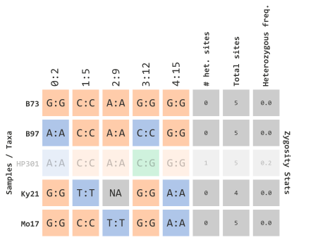

Filtering Genotype Tables
Brandon Monier
2023-02-10
Source:vignettes/genotype_filtration.Rmd
genotype_filtration.RmdIntroduction
Genotype table overview
In this vignette, we will discuss how you can filter genotype tables
in rTASSEL. As a reminder, a genotype table in TASSEL is
essentially an \(n \times p\) matrix
consisting of \(n\) samples or taxa
with \(p\) genotypic observations. To
illustrate this, see the diagram below:
In this illustration, sequence information is processed for variant
sites of each parental copy. Variant data is partitioned into an \(n \times p\) matrix for each sample and
relevant variant marker information (e.g. 0:2). This
includes:
- The TASSEL index for each variant site
(
<this value> :)- Note: since TASSEL is coded in Java, this value will start at 0!
- The physical position (bp) for each variant site
(
: <this value>)
Genotype information (e.g. each \(n \times p\) element) can be viewed in several ways. The default view (as shown above) reflects the following:
| Cell Type | Definition | Color |
|---|---|---|
| Major alleles | The most frequently observed allele of each column | Yellow |
| Minor alleles | The least frequently observed allele of each column | Blue |
| Heterozygous | Sites where parental copies differ (e.g. C:G) |
Green |
| Unknown | Sites where no information is given (e.g. NAs) |
Grey/White |
Filtering basics
Since TASSEL allows for many features to be represented in a genotype
table, rTASSEL’s filtration parameters are numerous. In the
following sections, we will discuss how each set of parameters work. In
general, these filtration schemes can be applied for samples (i.e. rows)
and marker information (i.e. columns).
The two main methods to accomplish this are:
For each section example code will be given with an illustrated
genotype table to explain each method. Prior knowledge about
rTASSEL data structures is needed so please refere to the
vignette Getting Started with rTASSEL if you are new to this
package!
Note: We will be using the the magrittr pipe
operator %>% for the following examples. More
information about this can be found here.
Filtering by sites…
Overview
In order to filter by variant sites (e.g. marker information), we can
use the function filterGenotypeTableSites(). This function
was modeled after TASSEL’s FilterSiteBuilder plugin to
ensure familiarity between the two methods. The parameters can be broken
up into several components:
- Genotype information
siteMinCountsiteMinAlleleFreqsiteMaxAlleleFreqminHeterozygousmaxHeterozygous
- Indexed variant sites
startSiteendSite
- Physical marker positions
startChrendChrstartPosendPos
- R objects
gRangesObj
- External files
bedFilechrPosFile
Note: While the following examples will illustrate these parameters in simplified formats, genotype information parameters and marker index and position parameters (i.e. indexed variant sites, physical marker positions, R objects, or external files) can be passed simultaneously!
Let’s assume we have an rTASSEL data object that
contains a genotype table:
myGT## A TasselGenotypePhenotype Dataset
## Class.............. TasselGenotypePhenotype
## Taxa............... 5
## Positions.......... 5
## Taxa x Positions... 25
## ---
## Genotype Table..... [x]
## Phenotype Table.... [ ]Let’s also assume it contains the same structure as the prior illustration:
In order for us to understand how the next few parameters work, we will illustrate how allelic frequencies are calculated:

…using allelic frequency
If we want to filter by minor allele frequency, we can use the following parameters…
myGT %>%
filterGenotypeTableSites(
siteMinAlleleFreq = 0.3,
siteMaxAlleleFreq = 1.0
)…which will remove the following columns:
We can also set a range using a limit with the
siteMaxAlleleFreq parameter…
myGT %>%
filterGenotypeTableSites(
siteMinAlleleFreq = 0.2,
siteMaxAlleleFreq = 0.3
)…which will remove the following columns:
…using NA data
We can also filter by missing sites (encoded in TASSEL with
N). Similar to how we calculated frequency of minor
alleles, we can apply the same logic with missing data with the
siteMinCount parameter:
myGT %>%
filterGenotypeTableSites(
siteMinCount = 5
)This parameter can range from 0 to the number of rows (e.g. taxa) within your genotype table. Since our example data only has 5 rows, this prior example will filter out any markers that contain at least 1 missing variant marker site:
…using heterozygosity frequency
Similar to the prior two sections, we can filter by calculated
frequency of heterozygous sites using the parameters,
minHeterozygous and maxHeterozygous. For
example, if we wanted to filter sites containing \(>\) 10% heterozygous sites, we could use
the following:
myGT %>%
filterGenotypeTableSites(
minHeterozygous = 0.0,
maxHeterozygous = 0.1
)which would filter out sites with calculated frequencies:

…using variant indexes
For the next several sections we will be illustrating how to filter
sites using positional information for each marker. To better explain
these concepts, let’s modify our genotype table (myGT) to
showcase (1) a broader range of positions and (2) different sequence IDs
(i.e. chromosomes). Note Chromosome IDs are not illustrated
this way in TASSEL and are only for demonstration purposes.
To filter by site index, we must first set the
siteRangeFilterType parameter to sites. Next,
we will be able to use the parameters, startSite and
endSite:
myGT %>%
filterGenotypeTableSites(
siteRangeFilterType = "sites",
startSite = 1,
endSite = 3
)In our example above, this will retain indexed sites 1 through 3:

…using physical positions
To filter by physical positions, we must first set the
siteRangeFilterType parameter to position.
Next we will be able to use the parameters:
startChrstartPosendChrendPos
The *Chr parameters will specify which chromosomes or
sequence IDs will remain and *Pos parameters will specify
the physical positions within each chromosome sequence. For example, if
we wanted to filter just chromosome 1, we can specify the following
parameters:
myGT %>%
filterGenotypeTableSites(
siteRangeFilterType = "position",
startChr = 1,
endChr = 1,
startPos = NULL,
endPos = NULL
)If we want to be more specific in our filtering, we can include positional information as well:
myGT %>%
filterGenotypeTableSites(
siteRangeFilterType = "position",
startChr = 1,
endChr = 2,
startPos = 250,
endPos = 700
)
…using GRanges objects
In the prior example, we have manually set parameters to filter by physical position. The caveat to this process is that you can only specify a “fixed” range of start and stop positions. For more dynamic filtering options, we can specify either external files (next section) or range-based R objects.
GRanges class objects from the
GenomicRanges package serve as the standard data structure
for representing genomic locations within the Bioconductor project. A
basic representation of this class entails the following data types:
-
seqnames- anRleobject of sequence IDs (e.g. chromsomes) -
ranges- anIRangesobject of start and stop coordinates for range info -
strand- anRleobject representing sequence strand info (+,-, or*)
For our example, we will represent a GRanges object as
the variable gr:
gr## GRanges object with 3 ranges and 0 metadata columns:
## seqnames ranges strand
## <Rle> <IRanges> <Rle>
## [1] chr1 250-500 *
## [2] chr2 213-400 *
## [3] chr2 500-700 *
## -------
## seqinfo: 2 sequences from an unspecified genome; no seqlengthsTo implement this in our filtration method, we can pass this
GRanges object into our gRangesObj parameters
and setting siteRangeRilterType to "none":
myGT %>%
filterGenotypeTableSites(
siteRangeFilterType = "none",
gRangesObj = gr
)Which will dynamically filter the following marker indexes:
…using BED files
rTASSEL allows filtering for both external BED files
and chromosomal position files. Similar to our GRanges
object, BED files can also represent genomic range information but as a
flat file. In our example, let’s take the same range information and
save it as a BED file:
$ cat my_ranges.bed
chr1 250 500
chr2 213 400
chr2 500 700This external file can be passed to our filtration method by setting
siteRangeFilterType to "none" and entering the
location of the file on disk in the bedFile parameter:
myGT %>%
filterGenotypeTableSites(
siteRangeFilterType = "none",
bedFile = "my_ranges.bed"
)This will filter our genotype table as previously shown in
GRanges section:
…using chromsomal position files
Similar to a BED file, we can also pass a chromosomal position file. This is a tab-separated file of two columns:
-
Chromosome- the sequence or chromosome ID for each marker -
Position- the physical position (bp) of each marker
In our example, this would look something like this:
$ cat my_chr_pos.tsv
Chromsome Position
1 300
2 213
2 665This external file can be passed to our filtration method by setting
siteRangeFilterType to "none" and entering the
location of the file on disk in the chrPosFile
parameter:
myGT %>%
filterGenotypeTableSites(
siteRangeFilterType = "none",
bedFile = "my_chr_pos.tsv"
)This will also filter our genotype table as previously shown in
GRanges section:
Filtering by taxa
Overview
In the prior sections we have discussed how to filter \(p\) observations (i.e. columns). In the
following sections, we will illustrate ways to filter \(n\) rows. In order to filter by variant
sites (e.g. marker information), we can use the function
filterGenotypeTableTaxa(). This function was modeled after
TASSEL’s FilterTaxaBuilder plugin to ensure familiarity
between the two methods.
While not as complex as site filtration, taxa filtration parameters can be seperated into the following sections:
- Genotype information
minNotMissingminHeterozygousmaxHeterozygous
- R objects
taxa
Since we will be filtering by taxa, let’s represent our toy illustration to contain actual maize taxa IDs instead of colorful circles. This is similar to how this would be encoded in TASSEL:
…using NA data
Similar to site filtration, we can filter by missing sites (encoded
in TASSEL with N). Instead of column (e.g. marker)
filtration, this will filter taxa (rows) based on missing data. Similar
to how we calculated frequency of minor alleles, we can apply the same
logic with missing data with the minNotMissing
parameter:
myGT %>%
filterGenotypeTableTaxa(
minNotMissing = 1.0
)This parameter is based on the “missingness” frequency calculated for each row in your genotype table. Since our example data only has 5 rows, this prior example will filter out any taxa that contain at least 1 missing variant marker site:

…using heterozygosity frequency
We can also filter taxa by calculated frequency of heterozygous sites
using the parameters, minHeterozygous and
maxHeterozygous. For example, if we wanted to filter all
taxa that contain at least one heterozygous site, we could employ the
following parameters:
myGT %>%
filterGenotypeTableTaxa(
minHeterozygous = 0.0,
maxHeterozygous = 0.0
)which would filter out taxa with calculated frequencies:

…using R objects
Filtering select taxa IDs can be achieved by passing an atomic vector
of character data types to the taxa parameter.
In our example, we will select the following IDs:
myFavTaxa## [1] "B73" "B97" "Ky21"This vector can passed to the following argument:
myGT %>%
filterGenotypeTableTaxa(
taxa = myFavTaxa
)Which will filter out any IDs that are not contained in the previous vector object:
This vector logic can applied to various types of subsetting methods in R. For example, if we had all of the taxa represented in one vector:
allTaxa## [1] "B73" "B97" "HP301" "Ky21" "Mo17"We could filter from this object using regular expressions. One
common method is using the str_subset method from the
stringr package in conjunction with
the magrittr pipe operator %>%:
myGT %>%
filterGenotypeTableTaxa(
taxa = allTaxa %>% str_subset("^B|^Ky")
)This will create a subsetted vector containing our taxa IDs of interest in the prior example:
While this example might be rather basic, this method is quite powerful if dealing with a massive breeding panel of several hundred samples.
Piping methods together
Example 1
Like with all good practices in R and programming, various
rTASSEL methods can be “piped” together in one continuous
flow of steps. For example, we could filter simultaneously on sites
and taxa using both methods in conjunction with the
magrittr pipe operator %>%. Let’s use our
previous toy data set:
Let’s (1) select taxa IDs that start with the letter “B” or “K” and (2) select indexed TASSEL marker sites 1 through 3. This will filter elements shown below:
myGT %>%
filterGenotypeTableTaxa(
taxa = allTaxa %>% str_subset("^B|^Ky")
) %>%
filterGenotypeTableSites(
siteRangeFilterType = "sites",
startSite = 1,
endSite = 3
)Example 2
We can also implement the same methods with other
rTASSEL methods. In this example we will (1) select taxa
IDs that start with the letter “B” or “K”, (2) select indexed TASSEL
marker sites 1 through 3, and (3) export to a VCF flat
file:
myGT %>%
filterGenotypeTableTaxa(
taxa = allTaxa %>% str_subset("^B|^Ky")
) %>%
filterGenotypeTableSites(
siteRangeFilterType = "sites",
startSite = 1,
endSite = 3
) %>%
exportGenotypeTable(
file = "my_filtered_gt.vcf"
format = "vcf"
)